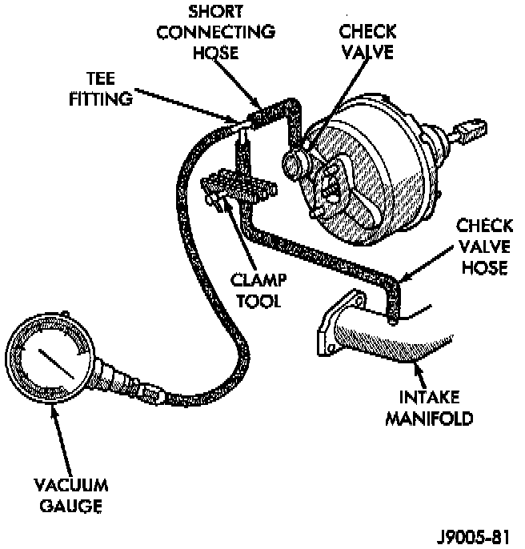

Vacuum Test
Typical Booster Vacuum Test Connections:

1. Connect vacuum gauge to booster check valve with short length of hose and T-fitting.
2. Start and run engine at curb idle speed for one minute.
3. Observe the vacuum supply. If vacuum supply is not adequate, repair vacuum supply.
4. Clamp hose shut between vacuum source and check valve.
5. Stop engine and observe vacuum gauge.
6. If vacuum drops more than 1 inch HG (33 millibars) within 15 seconds, booster diaphragm or check valve is faulty.